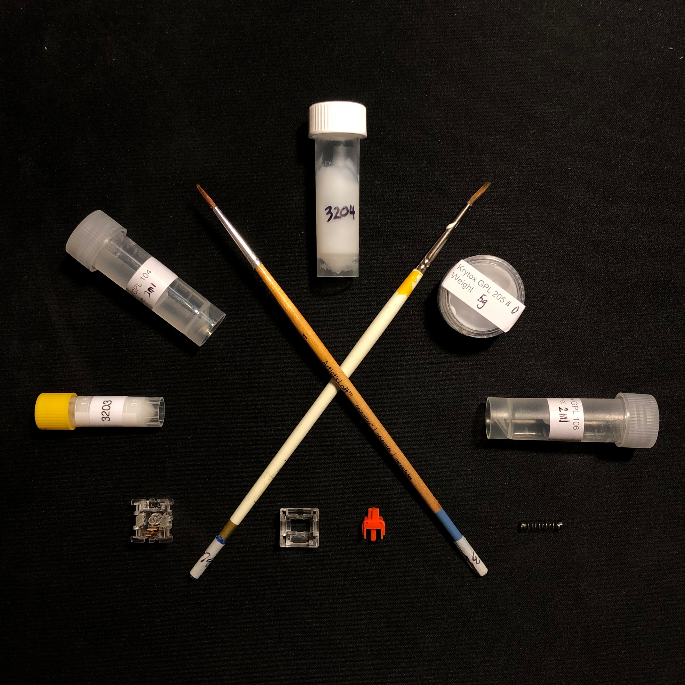

Switches
To start things off, switches are very important, if not the most important, aspect to consider when choosing a keyboard. Afterall it is what reads your key input and what you feel in your fingertips as well as what you even hear. Generally speaking there are two types of switches -
- Membrane
- Mechanical
1. Your average keyboard will be membrane which consists of a keycap and a rubber dome underneath that presses into a circuit. It works the same as your tv remote does and subsequently feels "mushy" or "squishy".

2. On the other hand, mechanical switches are objectively more responsive and "tactile". It utilises metal leaves, a spring and a stem to separate the leaves. Additionally, there are types that use magnets and lasers but for our custom needs, the leaves are more than enough.

Mechanical switches are the obvious choice and do have a bigger appeal in the custom mechanical keyboard world. There is a lot more modularity to it with its subtypes and hot-swappability. You can have silent linear switches, loud clicky ones and also tactile ones. There really isn't one that's the best. It's all up to the individual!
Types
There are 3 types of mechanical switches:
Linear
- smooth feel from top to bottom
- actuation point and release are the same
- typical "gamer" switch

Tactile
- small tactile bump on actuation
- actuation point and release are close
- between "gamer" and "typist"

Clicky
- loud click and tactile bump on actuation
- release above actuation point
- suitable for "typists"

Each one have their own appeal with nothing more than quality and feel that set switch to switch apart. There are many different manufacturers and switch recommendations are widely available. Here are just 3 highly recommended switches for their respective subtype.
Lubing
Additionally the stock switches can be further improved upon by using industry-grade lube. By applying lube to the inner parts of the switches, a better feel and sound can be achieved. Less friction between contact points can reduce the feeling of "scratching" when two surfaces rub off each other. The spring can cause a pinging noise upon switch release which can be mitigated with lube. There are a lot of different lubes available out there with some suited for linears as opposed to tactile. This can be from its thickness or base type. Recommended companies are Krytox and Tribosys A small fine-tip brush is recommended for application of the lube onto the surfaces.
